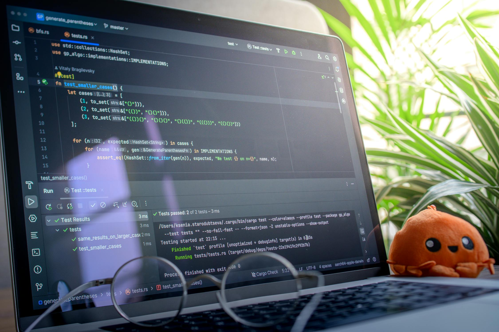
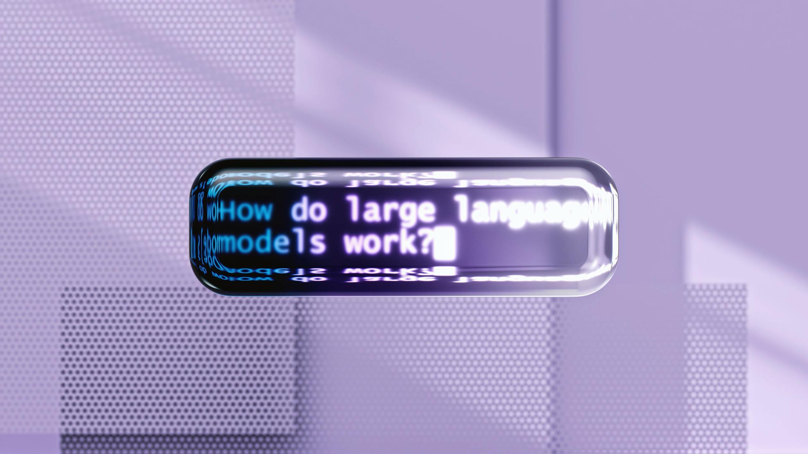

AI DAILY
AI 行业日报
2026年3月8日 · 精选 8 条
OpenAI 机器人负责人因五角大楼交易辞职
OpenAI 机器人业务负责人 Aaron Saunders 宣布离职，此前公司与美国国防部签署合作协议，将 AI 技术引入军事领域。Saunders 在内部邮件中称个人无法接受这一方向。
这是 OpenAI 近半年来第四位因战略分歧离开的高管。公司此前一直强调 AI 安全优先，但五角大楼合同金额据报达数亿美元级别，标志着 OpenAI 商业化路径的根本性转向。
INSIGHT
从"确保 AI 造福全人类"到签下国防合同，中间只隔了一轮融资。当估值压力和安全承诺发生碰撞，用脚投票的工程师比任何审计报告都诚实。
Karpathy：90% 的 AI 代码可靠性远远不够

前特斯拉 AI 总监 Andrej Karpathy 发文指出，当前 AI 编码工具的准确率约 90%，看似很高，但在软件工程中意味着每 10 行代码就有 1 行可能出错，放到生产环境中是灾难级别。
他以自动驾驶类比：99.9% 的安全率在百万公里行驶中仍意味着上千次事故。Karpathy 认为 AI 编码需要从"能用"跨越到"可靠"，这中间差的不是 10%，而是一整套工程验证体系。
INSIGHT
90% 和 99.99% 之间隔着三个数量级，也隔着整个软件工程史积累的测试、审查、灰度发布流程。AI 写代码的天花板不在模型能力，在于谁来兜底那最后的 0.01%。
OpenAI 与英伟达的算力博弈：自研芯片还是深度绑定？

据 The Information 报道，OpenAI 正在加速推进自研 AI 芯片计划，同时与英伟达就下一代 B300/GB300 GPU 的大规模采购进行谈判。两条路线并行推进，意图降低对单一供应商的依赖。
英伟达方面则通过 CUDA 生态锁定和优先供货策略维持话语权。业内估计 OpenAI 今年的 GPU 采购预算超过 100 亿美元，占英伟达数据中心收入的 15% 以上。双方既是客户关系，也是潜在竞争对手。
INSIGHT
100 亿美元的采购额换来的不是安全感，而是焦虑。这和苹果做自研芯片的逻辑一模一样——当供应商掌握你的命脉，自研不是选择题，是生存题。
商汤重构多模态：砍掉视觉编码器，性能反升
商汤研究院发布论文，提出一种无视觉编码器（VE-free）的多模态大模型架构。传统方案中，图像需先经 CLIP 等编码器转为特征向量再送入语言模型；新方案让语言模型直接处理像素，省去中间步骤。
实验显示，这种极简架构在 OCR、图表理解、视觉问答等任务上超越了同参数量级的传统方案，推理速度也提升约 20%。核心思路是：与其让两套系统"翻译"后对接，不如让一个系统从头学会看图和说话。
INSIGHT
做加法容易，做减法难。当所有人都在往多模态管线里加组件时，商汤反过来砍掉最核心的编码器——结果更好。这和乔布斯砍产品线的逻辑异曲同工。
阶跃星辰发布 Step 3.5 Flash：推理成本再砍一半

阶跃星辰发布 Step 3.5 Flash 模型，定位为高性价比推理模型。官方数据显示，在数学、代码、逻辑推理等基准测试上达到 Step 3.5 基座模型 95% 的水平，但推理成本降低约 50%。
这是国内大模型厂商"蒸馏+量化"路线的最新成果。阶跃星辰同时开放了 API 调用，定价为每百万 token 0.8 元，直接对标 DeepSeek 和 GLM-4 的价格区间。
INSIGHT
国产大模型正在复刻云计算的价格战剧本：先卷性能，再卷价格，最后卷生态。0.8 元/百万 token 的报价让人想起当年的"一分钱一核"，赢家永远是开发者。
字节 SeeDance 2.0：一张照片生成全身舞蹈视频
字节跳动研究院发布 SeeDance 2.0，输入一张人物照片和一段音乐，即可生成逼真的全身舞蹈视频。相比上一代，动作流畅度和面部一致性大幅提升，支持长达 30 秒的连续生成。
技术上采用了扩散模型 + 姿态引导的混合方案，解决了此前 AI 舞蹈视频中常见的肢体扭曲和节奏不同步问题。字节同时透露，该技术将集成到剪映和 CapCut 中，面向创作者开放。
INSIGHT
一张照片变舞蹈视频，听起来是娱乐应用，但放进剪映和 CapCut 就变成了生产力工具。字节的套路一直很清晰：先让技术变成玩具，再让玩具变成工具。
发改委：中国 AI 核心产业规模超 1.2 万亿
国家发改委在两会期间公布数据：2025 年中国 AI 核心产业规模突破 1.2 万亿元，同比增长约 18%。其中，智能芯片、大模型服务、智能驾驶三个细分领域增速最快，分别达到 25%、40%、30%。
发改委同时透露，2026 年将新增 AI 算力基础设施投资 3000 亿元，重点布局京津冀、长三角、粤港澳三大算力枢纽。配套政策包括 AI 企业税收优惠和人才引进计划。
INSIGHT
1.2 万亿的盘子里，大模型服务增速 40% 最值得看——这说明 AI 正在从"造轮子"转向"跑业务"。3000 亿算力投资的信号也明确：基建先行，应用跟上。
AI 驱动电网变革：全球智能电网投资将达 4 万亿
国际能源署（IEA）最新报告预测，到 2030 年全球智能电网累计投资将达 4 万亿美元，其中 AI 驱动的电力调度和负载预测是核心增长点。AI 数据中心的电力需求激增，反过来倒逼电网智能化升级。
报告特别指出，AI 用电量到 2030 年将占全球电力消费的 3-5%，相当于一个中等国家的用电规模。Google、微软、亚马逊已开始直接投资核电和可再生能源项目，绕过传统电网瓶颈。
INSIGHT
AI 行业正在经历一个黑色幽默：训练模型需要海量电力，于是不得不用 AI 来优化电网。科技公司自建核电站的画面，像极了挖矿的人最后去发电。
由 Zayen知览 整理 · 构建者视角